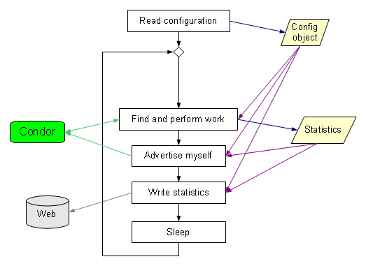
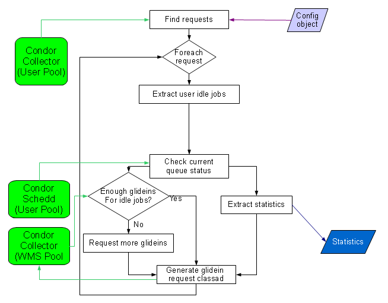
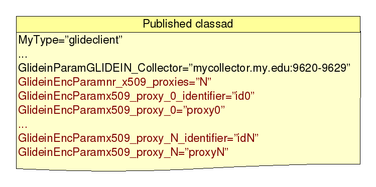

This document describes the internals of a glideinWMS Frontend Element Daemon.
A VO Frontend is composed of a Frontend
daemon and several Element/Group Daemons. Each Element Daemon is
autonomous; it advertises itself and processes the incoming
requests.
All daemons of a VO Frontend share the same
directory tree. The root of the tree contains the common startup and
configuration files, while each frontend group point has a few
additional configuration files on its own.
The Frontend Element Daemon is based on the polling principle; it runs in an eternal loop as described in the picture below.

The
configuration is read only once, at daemon startup, so a restart is
needed for every configuration change.
Most stages are self explanatory, so they will not be described to further detail. However a few need more detail; in particular:
This stage is composed of three logical parts, as shown in the picture below:
Find the requests by querying the Condor Collector of the User pool
For each request:
Identify number of user jobs in the user queue and instruct Factory to submit glideins accordingly via condor classad to the WMS collector.
Extract the statistics

This stage requires two input fields, the configuration data and the downtime flag, and returns the request-specific job statistics.
It also communicates with external Condor daemons. To talk to them, it currently uses the condor command line tools:
condor_status to query the Condor Collector
condor_q to query the Condor Schedd
condor_submit to submit new jobs to and to release held jobs in the Condor Schedd
The requests are inserted into the Condor Collector by the VO frontends. The picture below shows the format of the request as present in the Collector.
The advertise stage advertises the existence of the Element/Group
Daemon and its statistics to the Condor
Collector.
Two classes of ClassAds are sent, one for the
Element Daemon itself, and one for every processed event. The two
types of ClassAds are shown in the pictures below.

The current implementation uses a Condor provided command line tool, namely condor_advertise, for this task.
The write statistics stage converts the in-memory statistics into files in the Web exported monitoring area, as shown in the picture below.

The
data is written both in a XML file and as entries in RRD
archives.
The XML data can be used by other applications, while the RRD archives can be viewed using the provided HTML pages based on JavascriptRRD and Flot.
The current implementation will use the Python RRDTool library, if available. Else, it will fall back to the command line tool.
The Frontend element Daemons are implemented as python scripts, and they don't need to be pre-compiled.
The code is spread over several python modules, some specific to
the frontend and other shared between different parts of the
glideinWMS.
There are also some external dependencies, namely
the rrdtool and M2Crypto
python libraries and the Condor
command line binaries.
The picture below shows the dependency tree.

glideinFrontendElement.py
is executable.
The glideinWMS common libraries are in glideinWMS/lib directory.
The Factory Entry Daemons have configuration files both in the root of the factory configuration tree as well as in the entry specific subdirectory. The configuration files in the root are common for all the entry points, while the ones in the entry subdirectory are specific to that Entry Daemon.
Warning: The configuration files should never be changed by hand. They are generated and maintained by a dedicated tool.
The configuration files in the root of the factory configuration tree are shared between all the Frontend Element Daemons.
The following files are used:
frontend.descript – This file contains the
frontend description.
Most of the elements are used. Follows the
description of the most important ones:
FrontendName and GlideinName – The frontend name used when advertising the Element Daemon.
WebURL – Where are the monitoring and VO specific glidein files are located.
ClassAdIdentity – Identity of the frontend as mapped by the WMS collector
LoopDelay and AdvertiseDelay – How much should it sleep between iterations, and the minimum collector update frequency.
params.cfg – This file contains the factory global default parameters.
The configuration files in the element-specific subdirectory are used by only one Element Daemon.
The following files are used:
group.descript – This file contains the
element/group description.
All the elements are used. Follows the
description of the most important ones:
GroupName – The group name used when advertising the Element/Group Daemon.
JobSchedds – The Condor Schedd to look for to find user jobs.
MaxIdle, MaxRunning, MaxHeld – Limits on the number of jobs in the Condor Schedd queue.
params.cfg – This file contains the entry-specific default parameters.
RepositoryCVSROOTcvsuser@cdcvs.fnal.gov:/cvs/cd Package(s)glideinWMS/factory |
Author(s)GlideinWMS Team glideinwms-support@fnal.gov |